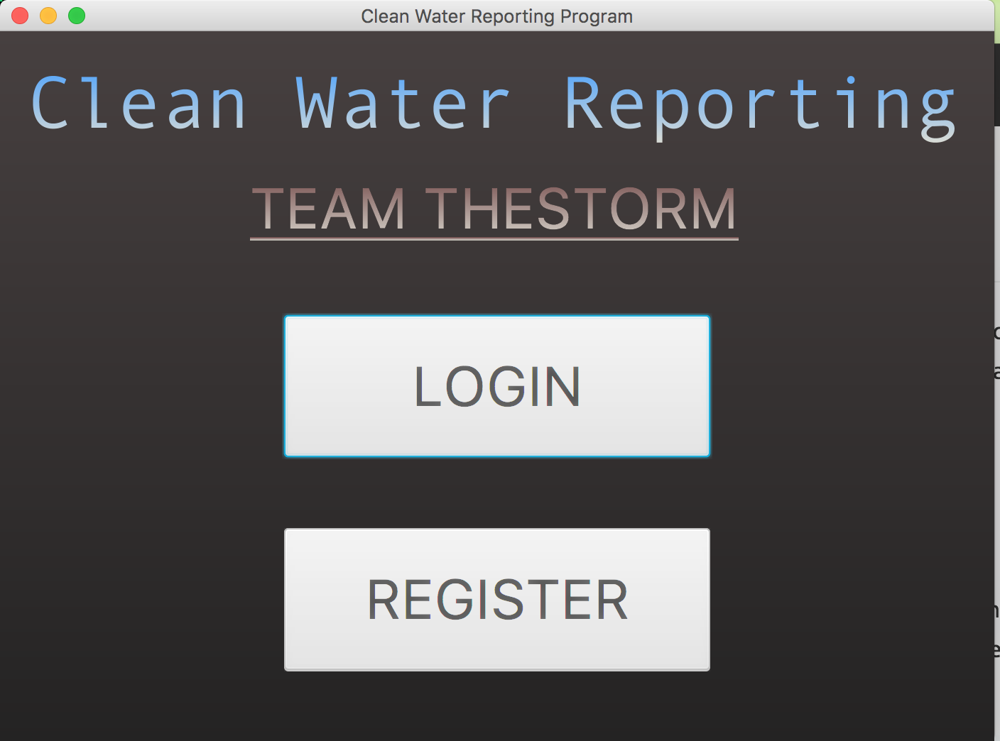
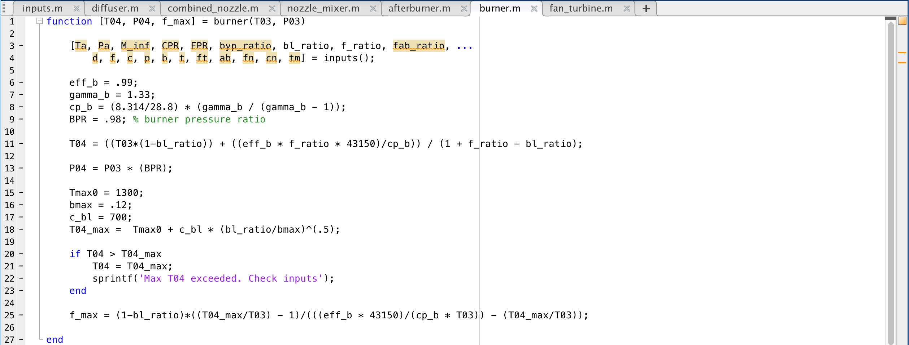
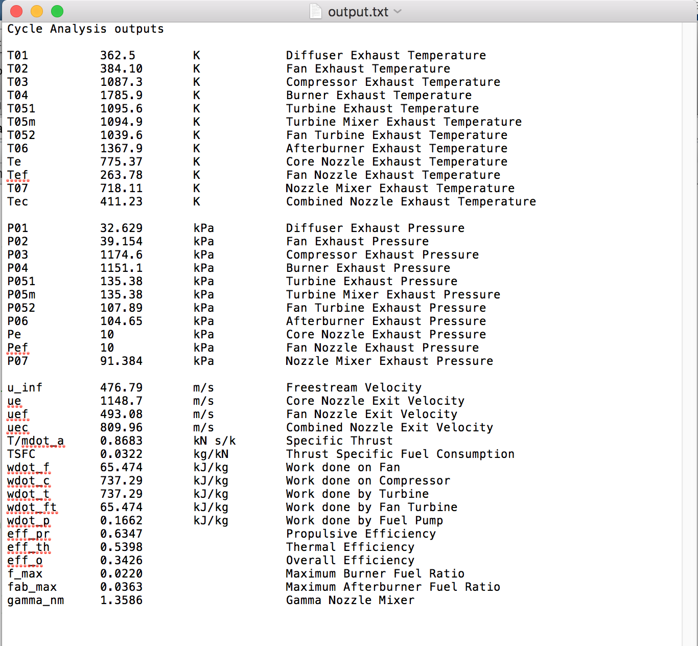
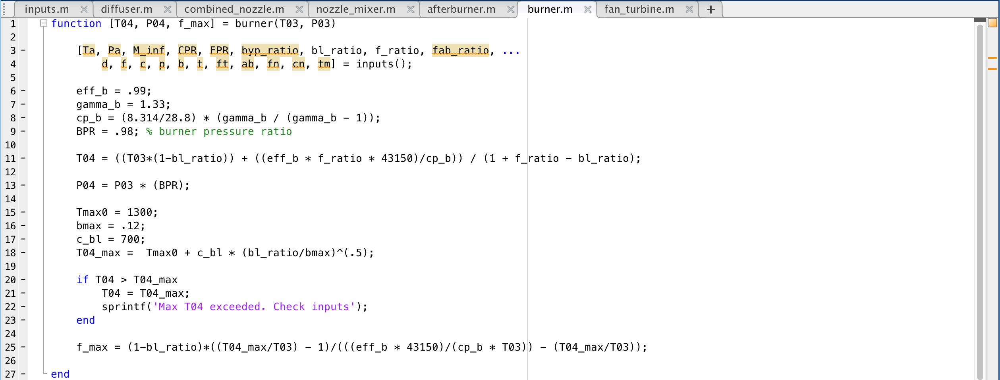
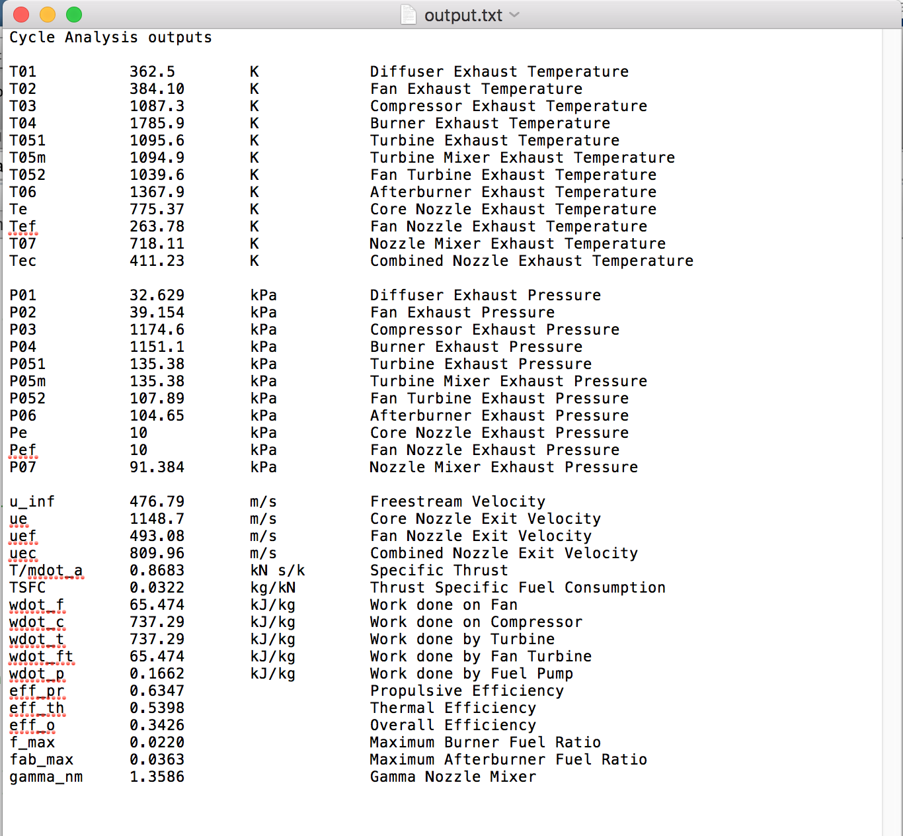
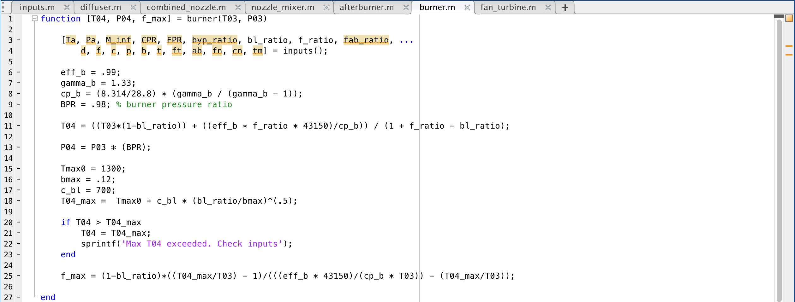
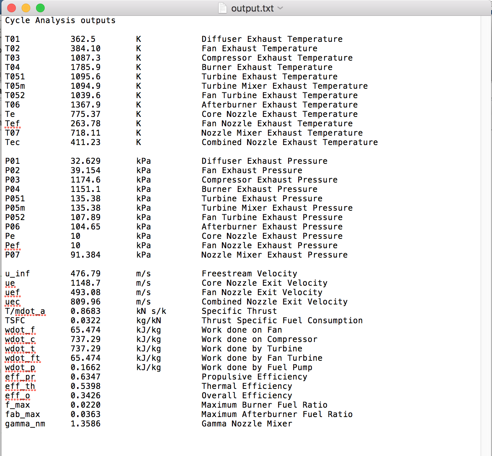

A gameboy platformer, written in C, developed for the visual boy advance. The game generates an infinite number of randomly seeded levels and the goal is to use the arrow keys to navigate the character sprite and to jump on the platforms to reach the goal sprite. This game uses Direct Memory Access to visualize the sprites and implements pretty decent object collision.
I created this game during ArchHacks. In the future I plan to port it to another platform and have improved random seeding as well as better object collision.
Natural Language Processing: Haiku Bot
October 2016
A twitter bot that creates a haiku based around the word that it is given. It does this by creating word associations from the TwinWord Word Association API, then creating a bigram collocation dictionary from the Gutenberg and Brown corporas. When the bigram dictionaries are created, an algorithm is used to randomly select bigrams that fill the syllabus rule of 5, 7, 5 per line, respectively. After the haiku is generated, the twitter bot automatically replies with the generated haiku. The program also takes quite a long time to create each bigram collocation dictionary so it supports caching. In the future, I plan to implement trigrams as well as nonrandomized bigram selection for the haiku in order to bring some more sense to it.
I created this app for HackGSU and worked mostly independently. I used Python, the Python Natural Language Tool Kit, the TwinWord Word Association API, and the Twitter API.
Intelligent Transportation Systems
August 2016 - December 2017
Two problems to be solved: determining if a bus is leaving a stop, and forecasting the time until a next bus arrives. Data was collected with an android application that pushed sensor information up to a server. Attributes were determined to be useful or not through unsupervised learning techniques such as Principal Components Analysis and Independent Components Analysis. Useful features such as acceleration, latitude/longitude, timestamp, etc. were used in the decision tree classification model, as well as the logistical regression model.
Also worked on a webapp that displays a live map of the buses in the Georgia Tech transportation system to aid in the supervision of drivers. The webapp utilizes a REST API that has bus location information, transmitted by tablets on each bus. It allows the managers to see which buses are consistently inconsistent and need supervision.
Clean Water Reporter
August 2016 - December 2016
A JavaFX application loosely based on a NASA challenge. It supports finding clean drinking water and reporting on testing results. In many parts of the world, access to clean water is a severe problem. Many times, water is available, but people do not know where to get it. Other times, water may appear clean, but has unacceptable levels of contaminants.
This application supports user creation/authentication/management, admin access, logging, submitting a water report, data visualization of water reports, and database logging.
I'm working with a team of five, using PostgreSQL and JavaFX to create the controllers for connecting the model and view together in a MVC software architectural pattern. The team is also following Agile software development practices.

Pacman Agent
September 2016 - December 2016
A python program that simulates artificial intelligence to solve certain goals for Pacman, whether it be finding the fastest route to a certain position, collecting the most points from strategically dispersed food, tracking ghosts using joint particle filters and inference, etc.
I integrated search algorithms such as depth first search, breadth first search, A*, as well as created several heuristics to create optimal algorithms that find the most efficient path to the goal state. Also, I implemented algorithms for performing both exact and approximate inference using Bayes Nets.
Turbine Engine Cycle Analysis
June 2016
A MATLAB program that calculates the performance parameters for a generic jet engine cycle. It has the capability of turning on and off specific components based on the performance requirements.
Components include: Diffuser, Bypass Fan, Compressor, Fuel Pump, Main Burner, Turbine, Turbine Mixer, Fan Turbine, Afterburner, Core Nozzle, Fan Nozzle, Nozzle Mixer, and Combined Nozzle.
I helped derive the equations with a team of two others and designed the code structure as well as output the performance parameters to a formatted text file.


MedxPort
February 2016
A webapp with an iOS component that is intended to be used by patients in small clinics as a universal medical profile as well as a scheduling application. The patient could update his medical profile on the webapp, and view it on the iOS app. The patient could also view the doctors schedule and choose a time slot available for both of them to avoid any double-bookings.
In a team of four at MHacks, I helped develop the scheduling calendar using Javascript and jQuery as well as create and design the user interface.
Get the Flight Out
February 2016
A webapp that queries the Expedia API to extract the cheapest flights out of an airport on a given da. It also utilizes the MapBox API as part of the UI.
This was my time competing in a hackathon at HackFSU. My inspiration sprang from trying to think of spring break plans and not knowing where to go, or what to do. Over the course of this hackathon, I learned what an API was, how to call it, how to parse through the JSON it returned, what a JSON even was, and how to connect working Javascript to HTML. I worked on a team of four and I developed the algorithm to sort the cheapest flights and also worked on connecting the Javascript to HTML.


 


